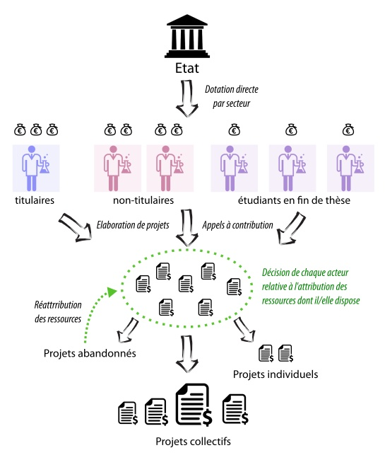

Recently, a group of French researchers published an op-ed in Le Monde announcing their collective intention to apply for the presidency of the HCERES, France’s highest public authority for regulating and guiding research. This initiative, notably driven by rogueESR, has garnered over 5000 supports, including mine.
Responsible for evaluating all research laboratories in France, the HCERES and its predecessor, the AERES, have accompanied—and often encouraged—the transformation of the French scientific landscape since 2006. Indeed, this “High Committee for the Evaluation of Research and Higher Education” is historically linked to the creation of the ANR (National Research Agency), which shifted French research toward an Anglo-Saxon “project-based” funding system in 2005.
A System Under Critique for 15 Years
This significant structural reform has provoked much discussion and exertion over the past 15 years. Indeed, it involves researchers dedicating a significant portion of their time to drafting funding applications that have little chance of success. Despite slight improvements since 2015, the success rate remains around 15%, with many agreeing that the time lost writing and evaluating these funding applications is largely counterproductive, both scientifically and economically, given the ANR’s enormous operational costs.
In this context, the op-ed published in Le Monde at the beginning of 2020 is just the latest in a long series (see here, here, here, here, or there). Will it have as much impact as the mass resignation of prominent ANR figures in 2016, who, refusing to cope with continuous budget cuts under Sarkozy and Hollande, perhaps helped increase the overall budget dedicated to the structure?
It’s uncertain, especially considering how the current executive treats demands coming “from below” and considering that the likely candidate for the presidency of the HCERES is none other than Thierry Coulhon, a former advisor to the Fillon government and now advising Emmanuel Macron on “education, higher education, research, and innovation”.
However, the unprecedented interest of this op-ed paradoxically lies in reminding us of a very simple but often forgotten fact: in terms of research evaluation, “the bottom” is actually “the top” since no one is better placed to assess scientific output than the researchers themselves. They are the ones, not ministers or the President, who are best positioned to anticipate upcoming revolutions, determine which research lines are dead ends and which are promising, or to evaluate the material and human resources required to achieve set goals.
With this idea in mind, members of the rogueESR collective urge the entire scientific community to engage with the question in their latest letter:
The second phase of this nascent movement of reaffirming the scholarly world as forming a community capable of setting its own rules, this immense freedom being balanced by a principle of responsibility towards society, requires everyone’s participation. What strategy can we employ, by curbing all forms of bureaucracy, to agree, beyond partisan divisions, on the University and the research system we aspire to bring to life. Our email is open to all thoughtful tactical and strategic proposals.
I seize the opportunity to submit a proposal as radically different from the current system as from the previous one. Given the ANR’s programmed failure, it might be tempting to nostalgically contemplate the past and its “inter-ministerial funding”—less time-consuming and more flexible for researchers—but this would be a serious mistake, in my opinion.
Indeed, if one can consider that the reforms which gave birth to the ANR were an opportunity for the then-government to hold a “modernization discourse” that masked—like a smokescreen—the upcoming budget cuts, these reforms were still based on strong dissatisfaction with the old system. It is informative to revisit the report on research studied at the National Assembly on December 21, 2004. Many criticisms targeted the overly hierarchical allocation of credits (following a ministry - institute - laboratory - researcher scheme) whose major flaw was to fuel local nepotisms, often allowing laboratory directors to distribute resources at their discretion; and often at the expense of the most innovative or risky projects carried by younger researchers still poorly integrated into the complex power games that academia has always known. The shift to project-based funding has at least had the virtue of de-siloing all researchers and establishing a horizontal competition theoretically allowing each to compete directly for resources.
A Framework-Breaking Proposal
Is it possible to combine the flexibility of the old system with the horizontality of the new, while taking a real step towards a more free, more creative science whose management would involve “everyone’s participation”? It seems to me that yes.
The idea is as follows: instead of awarding funding by project or by laboratory, the state could directly allocate a portion of its credits to each actor in the research process, according to a system blending scientific merit and seniority. From the PhD student at the end of their thesis to the senior research director, including the research engineer and the postdoc, each person contributing to advancing knowledge would thus control a fraction of the credits available for their branch.
At each hierarchical level, the allocation would increase significantly, reflecting despite everything the evolution of scientific expertise. In the field of cognitive neuroscience, for example, the state could allocate five thousand euros per year for doctoral students at the end of their thesis, twenty thousand euros for non-tenured researchers (i.e., postdocs), and fifty thousand euros for tenured researchers and research engineers. If this idea may seem subversive with respect to the traditional hierarchical organization, it is not by accident. In reality, it’s simply about pushing the logic of rogueESR to the limit.
If researchers are to collectively evaluate and control research, isn’t it natural to assign to each of them a part of the available resources, to be employed according to their expertise and motivations? Since it is common to consider that a PhD student at the end of their thesis has already become an expert regarding their research theme, and since postdocs are often seen as true locomotives of academia, isn’t it sensible to include these two categories in the collective system of evaluation and control being discussed?
A natural objection is that this organization seems at first glance highly individualistic, each researcher then having their little patch of land to cultivate their particular interests. However, it should be noted that the project-based funding as we know it is already highly individualistic since the funding is associated with a single person rather than a collective, both at the French and European levels. Moreover, in this new system, no one would have the “firepower” necessary to carry out major projects, so that collaboration and pooling of resources would be imposed on anyone with big scientific ambitions.
By setting up a platform allowing both the submission of projects, the call for contributions, and the allocation of resources, each actor could then organize a fundraising campaign among their peers, in exchange for an authorship place and/or a proportionate right to oversee the publications resulting from this pooling. The state could promote this type of cooperative logic by awarding additional funding to projects that have received enough contributions, thus breaking with the zero-sum game principle.
Fighting Academic “Branding” and the Reign of Researcher-Communicators
The great virtue of this system would be to put each researcher before the following dilemma: work alone with limited means or work collectively with significantly greater means, so that personal ambitions would systematically be weighed against scientific ambitions; and this, unlike the current system where building a personal reputation and brand (“academic branding”) very largely conditions the ability to fulfill our scientific ambitions, benefiting the researchers most skilled in communication.
Such an initiative would undoubtedly multiply the inventiveness of researchers at every level and would also allow for better exploitation of the inter-individual differences that exist in academia. For example, in the field of neuroscience, as in many others, “theorists” generally do not need a lot of their own resources to do their work. A few good computers suffice. However, they urgently need to be able to rely on work informing and constraining the theories they develop. In such a system, these same theorists could thus make their credits available to “experimentalists” who have submitted the most useful projects to them, or directly issue a call for contributions for the experiments they most need.

Certainly, such a reform could not be imposed on the scientific community overnight, and it would undoubtedly take years of local experimentation to develop the necessary tools and refine the logistical and ethical aspects of this entirely “bottom-up” participative system, to borrow an Anglicism that scientists are fond of.
But if we want to hold all researchers accountable for the future of research, and if we want them all to intervene in its evaluation, if we want to fight both bureaucratic arbitrariness and hierarchical arbitrariness, we will have to give them the counterpart of this new responsibility: control over the available resources. Without this, a system proceeding by the nomination of representatives in charge of control, evaluation, and distribution of resources seems inevitable, whether they be laboratory directors or bureaucrats employed by central institutions like the ANR.
For dispensing with such representatives and for freeing the vital forces of academia while advocating self-management, it is essential that everyone contribute to this work of evaluation, orientation, and pooling.
To Go Further
As part of this collective movement, two public sessions of the “Science Policies” seminar will be held at the EHESS on January 30 and February 6 next. These meetings will undoubtedly provide an opportunity to discuss many other proposals imagined by researchers to reform the system as we know it.
See the program, here.